El encuentro de Maria del Mar Bonet con Amancio Prada bajo el manto del Festival Millenni . sirvió para que ambos artistas reafirmaran la línea argumental de sus últimos trabajos sin mayores novedades.
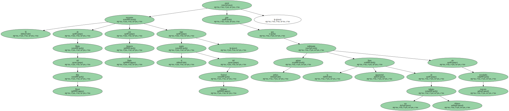Como en otros conciertos del ciclo , no hubo , efectivamente , puentes comunicativos explícitos entre Bonet y Prada , sino sendos monólogos coronados por unos duetos más testimoniales que efectivos.
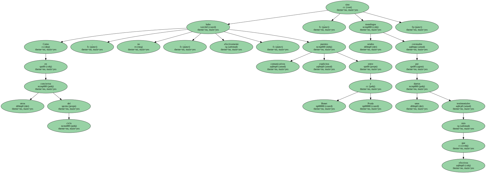Bonet no desvió su actuación del trayecto ya descrito en sus otras citas barcelonesas de este año ( Auditori y Plaza del Rei ) : una mirada al este que sobrevuela el Mediterráneo ( Mallorca , Italia , Túnez , Grecia ) y avista costas indias de la mano de Shyam Sunder.
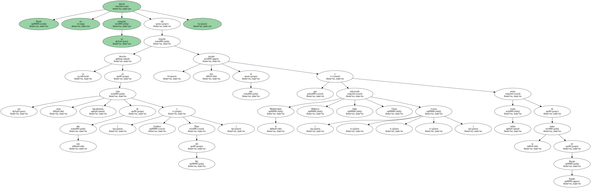Tres conciertos singulares en un mismo año han supuesto un reto a la imaginación que Bonet resolvió apelando al oficio , a su exuberancia vocal y a su proverbial sensibilidad transcultural.

La cercanía popular de Cavall de foc - - con menciones a La dama d'Aragó y Com un mirall - - y el rescate de la cosecha del memorable Anells d'aigua - - Dansa de la primavera y Bir demet yasemen - - abrillantaron un repertorio quizá algo afectado por un superávit de mística y autocomplacencia espiritual.
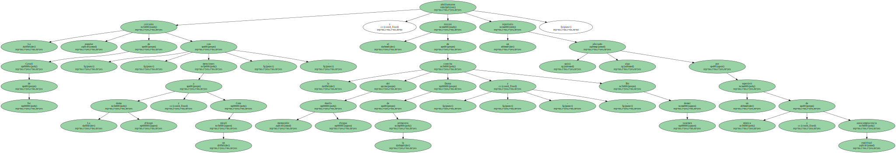Este fue , no obstante , el guión de Bonet en sus orientalistas conciertos de 1999.
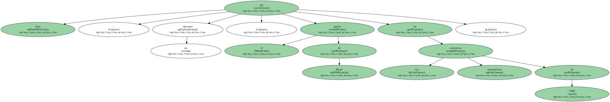Aunque , para místico , Amancio Prada.
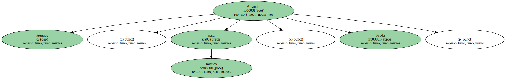Sus guiños a Rosalía de Castro , Alvaro Cunqueiro y Federico García Lorca pasan por el filtro de una austeridad expresiva de riguroso acabado técnico.
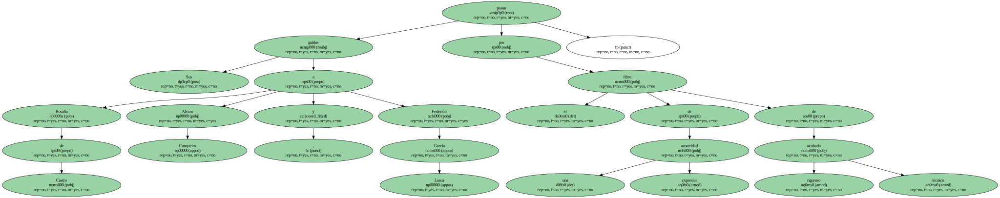La ironía sigue sin ser su fuerte , pero Prada conserva el atractivo de un personaje fuera de tiempo que , en castellano o en gallego , consigue seducir con temarios tan estéticamente inflexibles como los de Ciudad encantada , La guitarra y Libre te quiero.
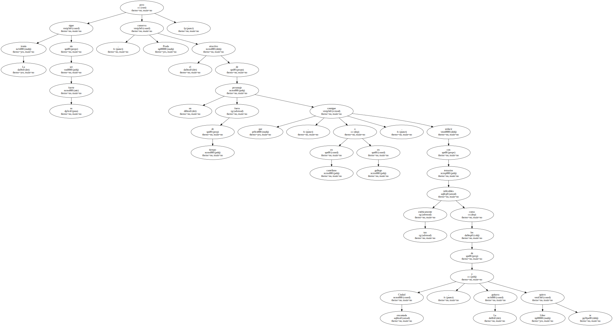Poéticamente intachable.
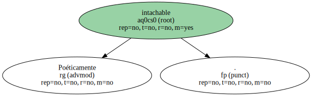El capítulo más frágil del doble concierto recayó , en fin , en unas colaboraciones probablemente resentidas por la falta de rodaje.
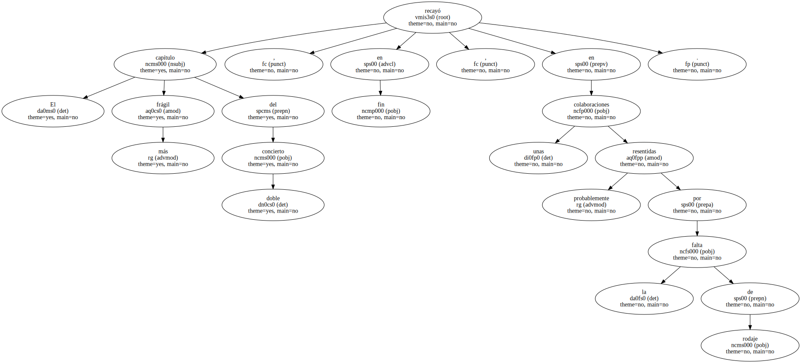Bonet abordó en gallego su ya conocida Campanas de Bastabales ( de Rosalía de Castro ) con integridad , pero Prada se quedó en una discreta intervención en catalán en Què volen aquesta gent y Per Hipòcrates.
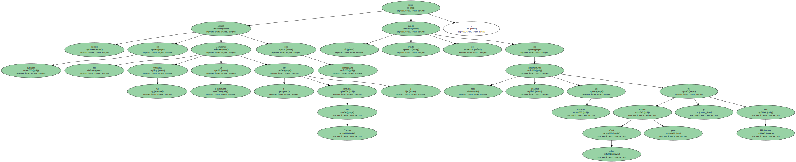Cabía esperar algo más.
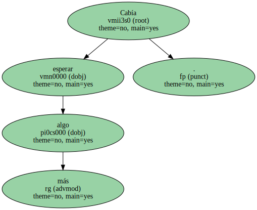